Romains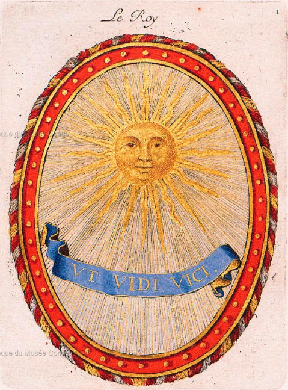 UT VIDI, VICIDU ROYDU ROY Il seroit mal-aisé de trouver un Corps de Devise qui convint mieux au Roy que celuy du Soleil, veu le nombre presque infiny de convenances illustres qui se rencontrent entre ce Grand Prince, et ce bel Astre; Mais sans doute qu’une des plus remarquables, et qui est touchée par cette Devise, est que comme le Soleil n’a qu’à se faire voir pour dissiper les tenebres, ainsi ce Grand Monarque n’a besoin que de sa presence pour vaincre ses ennemis. Ce qui est heureusement exprimé par ces mots, UT VIDI, VICI, qui font allusion à ce mot de Jules Cesar, veni, vidi, vici.
Romains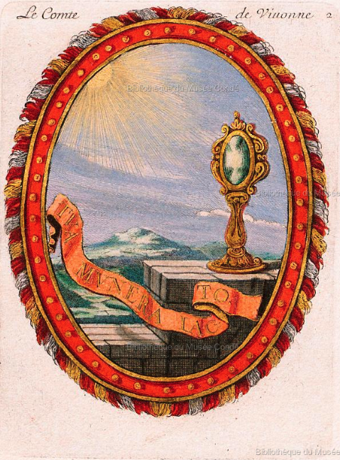TUA MUNERA JACTOCOMTE DE VIVONNECOMTE DE VIVONNE Le Miroir ardant loin de renfermer en luy-méme la lumiere du Soleil, la refléchit, et la renvoye de toutes parts avec encore plus de force qu’elle ne luy est envoyée, et de cette sorte il est le symbole parfait de la reconnoissance de ce Chevalier pour les bienfaits qu’il a receus de Sa Majesté, qu’il s’efforce de faire éclater en tous lieux et en toutes rencontres.
Romains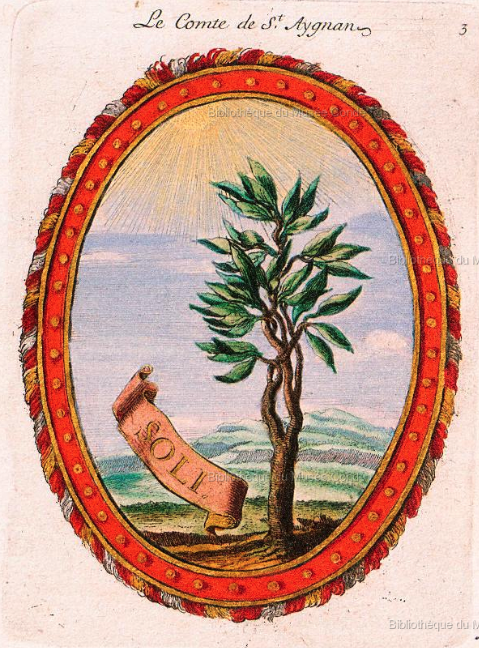SOLICOMTE DE SAINT-AGNANCOMTE DE SAINT-AGNAN Le Laurier est le symbole de la Victoire, qui a cela de commun avec ce Chevalier, qu’elle ne veut appartenir qu’au Roy seul, et ne se ranger jamais que de son party.
Romains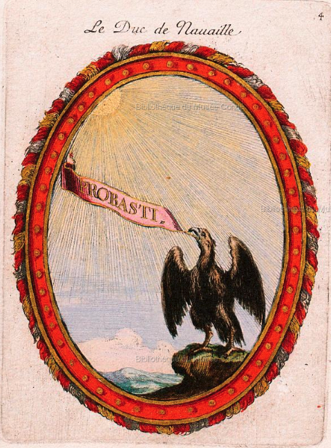 PROBASTI COMTE DE NAVAILLESCOMTE DE NAVAILLES On sçait que les Aigles éprouvent leurs Aiglons en les exposant aux rayons du Soleil, et que ceux-là seulement sont reputez estre veritablement de leur race qui en peuvent supporter l’éclat sans siller les yeux. Ce Chevalier prétend de méme que les grands et illustres employs dont le Roy l’a honoré, et qu’il a soûtenus avec gloire, sont des marques assurées de son merite et de sa fidelité.
Romains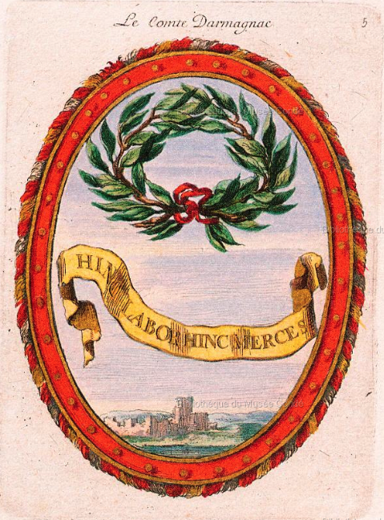 HIC LABOR, HIC MERCES COMTE D'ARMAGNAC COMTE D'ARMAGNAC Ce Chevalier se promet que la Victoire representée par cette Couronne, estant le but de tous ses travaux, en sera pareillement l’issuë et la recompense.
Romains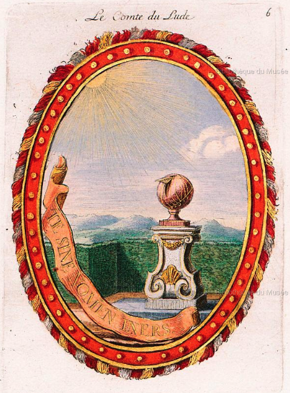 TE SINE NOMEN INERS COMTE DU LUDE COMTE DU LUDE Quelque juste et bien fait que soit un Cadran, il ne peut estre utile s’il n’est regardé du Soleil. Ce Chevalier reconnoit de même que quelque merite qu’il puisse avoir en sa personne, il ne peut devenir considerable qu’autant qu’il plaira à sa Majesté de le considerer, et de luy donner moyen de mettre en usage les divers talens qu’il possede.
Romains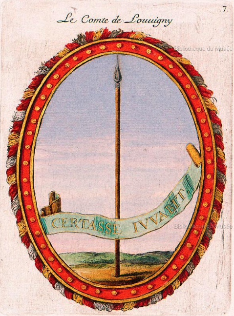 CERTASSE JUVABIT COMTE DE LOUVIGNY COMTE DE LOUVIGNY Comme un javelot est toûjours prest au combat; de même ce Chevalier assure qu’il ne demande autre chose que d’étre employé aux nobles exercices de la guerre.
Romains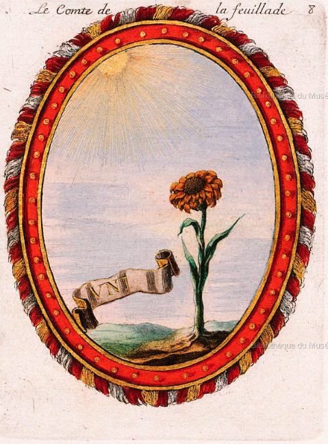 UNI COMTE DE LA FEUILLADE COMTE DE LA FEUILLADE L'inclination que le Girasol témoigne pour le Soleil est connuë de tout le monde; et c’est par ce symbole que le Chevalier qui le prend pour sa Devise a voulu marquer la fidelité inviolable, avec laquelle il veut s’attacher à son Prince, et n’avoir jamais d’autres mouvemens que les siens.
Romains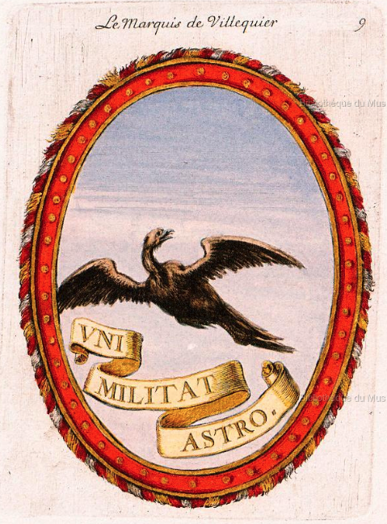 UNI MILITAT ASTRO MARQUIS DE VILLEQUIER MARQUIS DE VILLEQUIER L’Aigle accoûtumée à porter le foudre de Jupiter ne voudroit point se charger des Armes d’une autre Divinité. Ce Chevalier assure de même qu’il ne veut étre occupé qu’à la défense et à la garde de son Prince qu’il regarde comme le seul Astre d’où dépend toute sa fortune.
Romains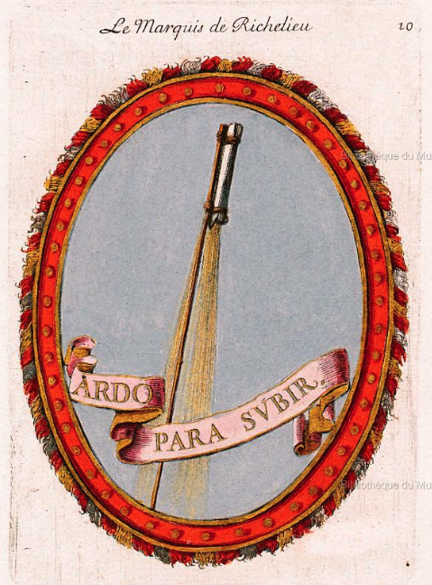 ARDO PARA SUBIR MARQUIS DE RICHELIEU MARQUIS DE RICHELIEU Comme le feu qui brûle une fusée volante est cause de son élevation, on peut dire de même que l’amour de la gloire, dont l’ame de ce Chevalier est embrasée, en luy faisant produire de grandes actions, sera cause de son élevation aux plus grands et plus illustres emplois.
Romains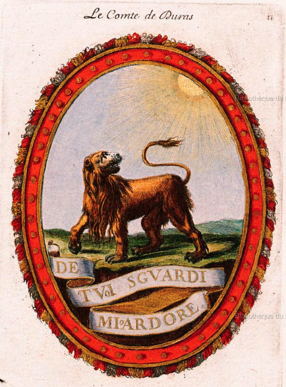 DE TUOI SGUARDI MIO ARDORE COMTE DE DURAS COMTE DE DURAS Le Lion qui ne se plaît que dans les païs extremement chauds, est redevable de l'ardeur de son courage à celle des rayons du Soleil dont il est échauffé: Ainsi ce Chevalier déclare que sa valeur s’augmente et se redouble par les regards favorables de son Prince.
Persans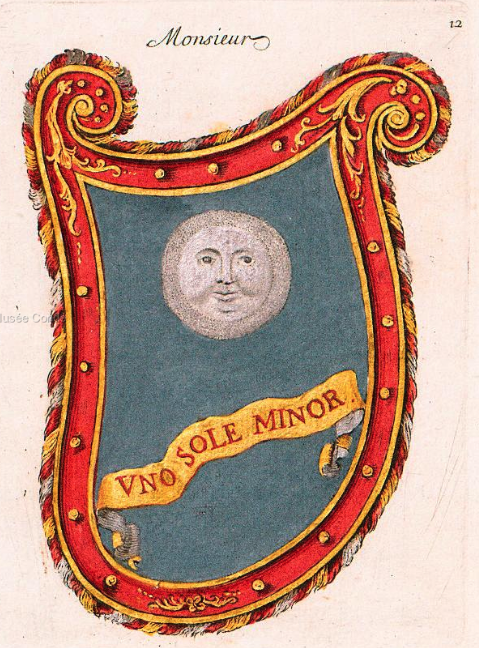 UNO SOLE MINOR DE MONSIEUR DE MONSIEUR Comme la Lune particulierement en son plein surpasse de beaucoup les autres Astres en grandeur et en lumiere; en sorte qu’il n’y a que le Soleil qui ait en cela quelque avantage sur elle, on peut dire, que c’est avec beaucoup de justice que Monsieur Frere Unique du Roy l’a prise pour le corps de sa Devise, puis qu’il ne voit point de rang au dessus du sien que celuy de sa Majesté. Mais elle luy convient encore particulierement en cette rencontre, parce qu’il represente le Roy de Perse, qui s’estimant le plus grand de tous les Roys, ne reconnoissoit au dessus de luy que le Soleil qu’il adoroit.
Persans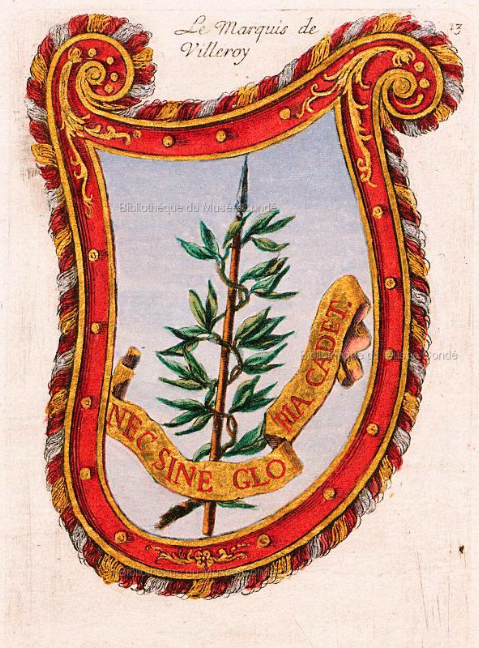 NEC SINE GLORIA CADET MARQUIS DE VILLEROY MARQUIS DE VILLEROY De même que ce Dard est toûjours environné de Laurier, quelque part qu’on le lance, soit qu’il frappe au but, soit même qu’il tombe à terre: Ainsi ce Chevalier a voulu faire entendre que quelque expedition qu’il entreprenne, elle sera toûjours accompagnée de la gloire dont le Laurier est le symbole, soit qu’elle luy reüssisse avantageusement, soit méme qu’il y perde la vie.
Persans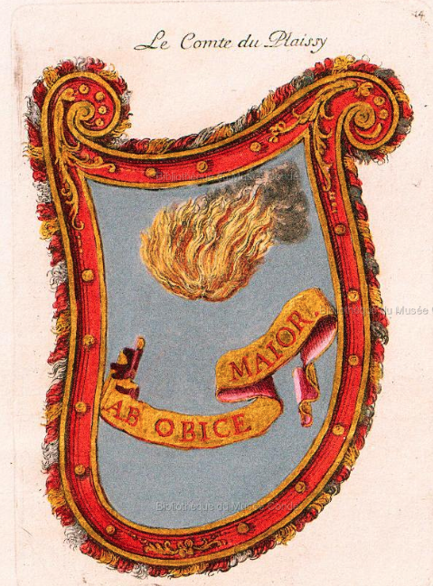AB OBICE MAJORCOMTE DU PLESSISCOMTE DU PLESSIS L’activité et la violence du feu s’augmentent par la resistance qu’il rencontre, et plus il est resserré, plus il éclate; Il en est de même d’un grand courage, qui sent redoubler son ardeur, soit dans la guerre, soit dans l’amour, par les obstacles et les difficultez qui se presentent.
Persans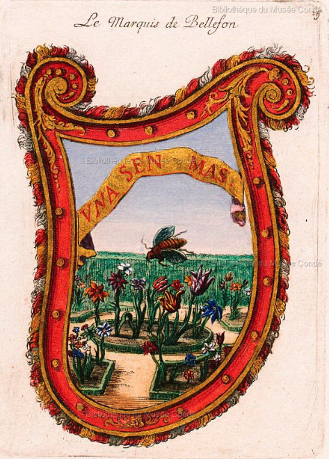UNA SIN MASMARQUIS DE BELLEFONDMARQUIS DE BELLEFOND Comme une Abeille, aprés avoir consideré toutes les fleurs d’un Parterre, enfin s’attache à une seule; De même ce Chevalier fait entendre par cette Devise, qu’encore qu’il ait beaucoup de civilité, et d’inclination pour toutes les Dames; Il y en a une neantmoins qui a toutes ses affections, et à laquelle son cœur est particulierement attaché.
Persans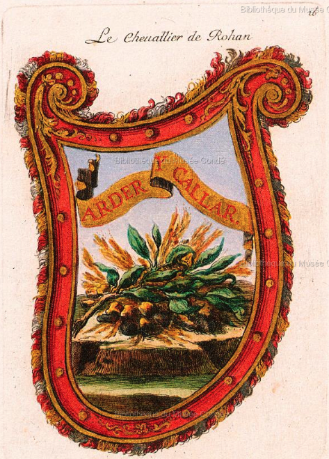ARDER Y CALLAR ?CHEVALIER DE ROHANCHEVALIER DE ROHAN Ce feu peut representer ou celuy de la gloire ou celuy de l’amour, mais de quelque sorte qu’on l’interprete, ce Chevalier declare qu’il luy est aussi impossible d’en brûler sans faire du bruit, soit en faisant parler de luy par ses belles actions, soit en parlant de son ardeur à celle qui en est la cause, qu’il est mal aisé que des Lauriers se laissent consumer par le feu qui les brûle sans faire beaucoup de bruit et beaucoup d’éclat.
Persans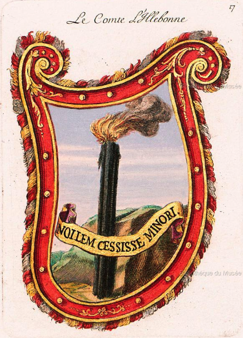NOLLEM CESSISSE MINORICOMTE DE L’ISLEBONNECOMTE DE L’ISLEBONNE Comme il n’y a que la seule lumiere du Soleil qui soit capable d’effacer celle d’un flambleau qui éclate durant la nuit quelque autre Astre qui brille dans le Ciel. Ce Chevalier prétend de même que la gloire de sa Majesté efface à la verité la sienne: mais qu’il se sent enflamé d’un si grand desir d’en acquerir, qu’il ne voudroit pas le ceder à pas un autre.
Persans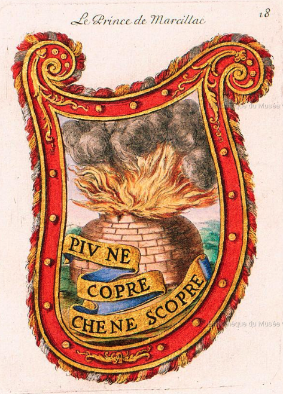PIU NE COPRE, CHE NE SCOPREPRINCE DE MARSILLACPRINCE DE MARSILLAC Quelque grande que soit l’ardeur des vrays Amans, leur discretion doit étre encore plus grande, et cacher plus de la moitié de leur passion. C’est ce qu’a voulu faire entendre ce Chevalier par cette fournaise, dont l’on ne peut empécher qu’il ne sorte quelque flame: mais qui en renferme bien plus qu’elle n’en laisse paroître.
Persans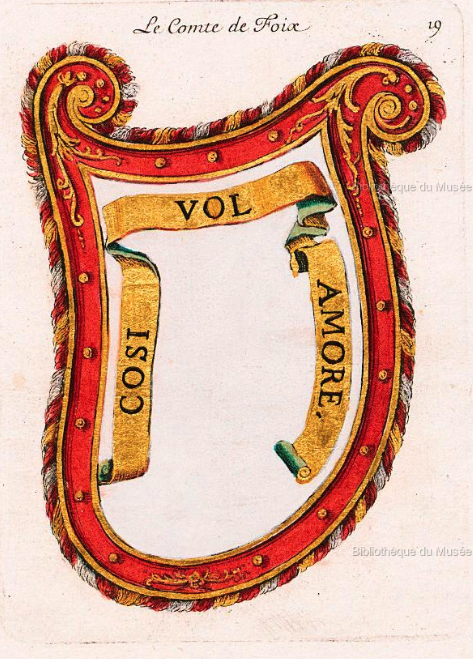COSI UVOL AMORECOMTE DE FOIXCOMTE DE FOIX La plus-part des Amans témoignent leur passion dans leurs Devises, et publient bien souvent ce qu’ils devroient cacher: Mais ce Chevalier aimant à faire voir son amour par sa discretion, dit que ce même amour luy défend d’en faire rien paroître.
Persans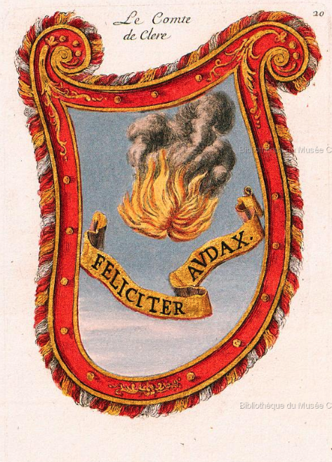FOELICITER AUDAXCOMTE DE CLERECOMTE DE CLERE La flâme s'éleve sans cesse, et par une heureuse hardiesse prend toûjours le dessus; A son imitation ce Chevalier espere avoir toûjours avantage et sur ses rivaux et sur ses ennemis.
Persans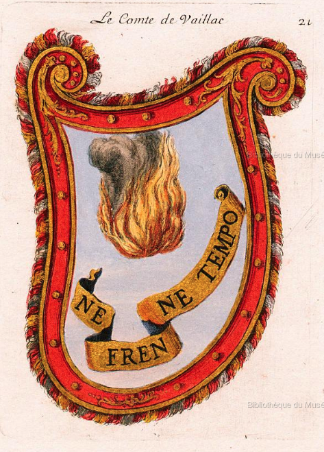NE FREN NE TEMPOCOMTE DE VAILLACCOMTE DE VAILLAC Comme la flâme surmonte tous les obstacles qu’elle rencontre, et qu’elle s’augmente avec le temps au lieu de diminuer tant qu’elle trouve de l’aliment. Ainsi l’ardeur d’un grand courage se redouble par les difficultez, et par le temps quand il luy fournit de nouvelles occasions de se signaler.
Persans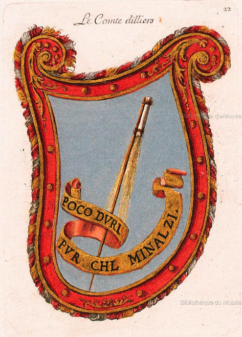POCO DURI PUR CHE M'INALZICOMTE D’ILLIERSCOMTE D’ILLIERS Une fusée volante ne dure pas longtemps, mais elle s’éleve toûjours et avec éclat tant qu’elle dure. Ce Chevalier qui la prend pour sa Devise, souhaite de luy ressembler, consentant que sa vie soit de peu de durée, pourveu qu’elle soit éclatante, et qu’elle aille toûjours s’élevant jusqu'au comble de la gloire.
Turcs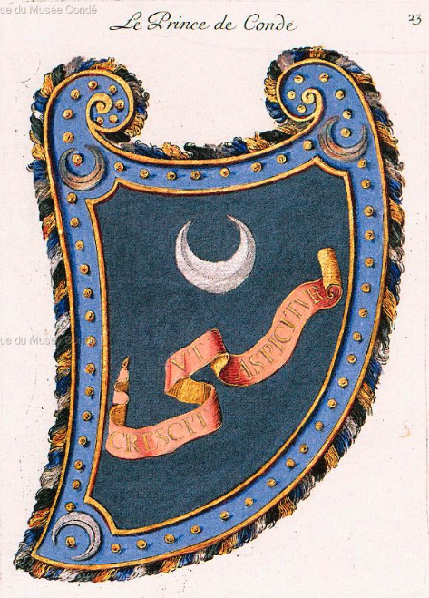 CRESCIT UT ASPICITUR PRINCE DE CONDE PRINCE DE CONDE Comme le Croissant augmente de plus en plus en lumiere selon qu’il est regardé du Soleil, ainsi le Prince qui le prend pour sa Devise, veut faire entendre que tenant du Roy toutes ses grandeurs, et tout son éclat, il reconnoit que sa gloire augmentera à proportion des regards favorables qu’il recevra de sa Majesté.
Turcs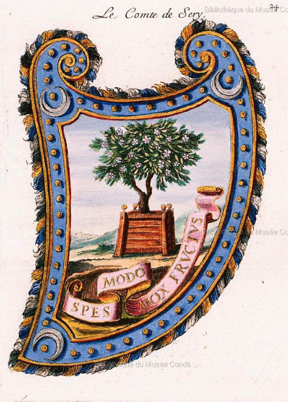 SPES MODO, MOX FRUCTUS COMTE DE SERY COMTE DE SERY Les fleurs d’un arbre sont comme une assurance des fruits qu’il doit donner: ce qui marque tres-bien ce qu’on peut attendre d’un jeune Chevalier, qui promet dans peu les fruits d’une valeur consommée, bien qu’il ne soit encore que dans la premiere fleur de son âge.
Turcs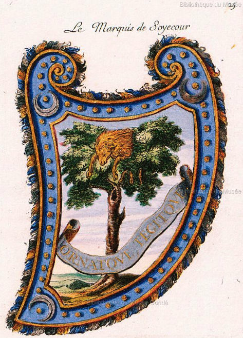 ORNATQUE, TEGITQUE MARQUIS DE SOYECOURT MARQUIS DE SOYECOURT La Toison d’or servoit d’ornement tout ensemble, et de défense à l’arbre qu’elle couvroit, et de cette sorte elle convient parfaitement au Maistre de la Garderobe, qui ne se vante pas seulement de parer son Prince: mais de le défendre aussi en toutes occasions, au peril de sa vie.
Turcs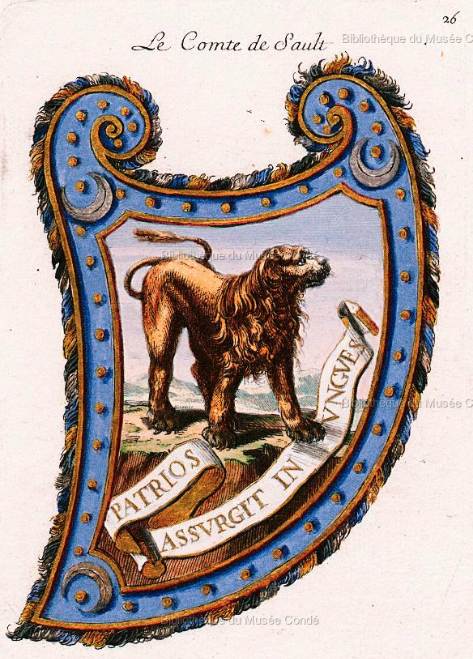 PATRIOS ASSURGIT IN UNGUES COMTE DE SAULT COMTE DE SAULT Il est aisé de voir par cette Devise que le Chevalier qui la porte, veut égaler la vertu de ses ayeuls, et imiter le jeune Lyon, qui donne déjà des marques qu’il se rendra avec l’âge aussi redouté que ses peres.
Turcs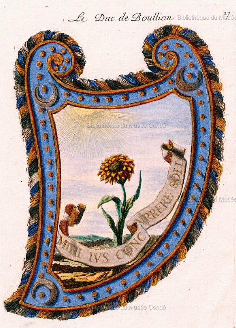 MIHI IUS CONCURRERE SOLI DUC DE BOVILLON DUC DE BOVILLON Cette Plante a l’avantage de suivre en quelque sorte le cours du Soleil; ainsi ce Chevalier ne pouvoit choisir un corps de Devise, qui marquât plus précisément son attachement à son Prince, et son exactitude à suivre tous ses Commandemens.
Turcs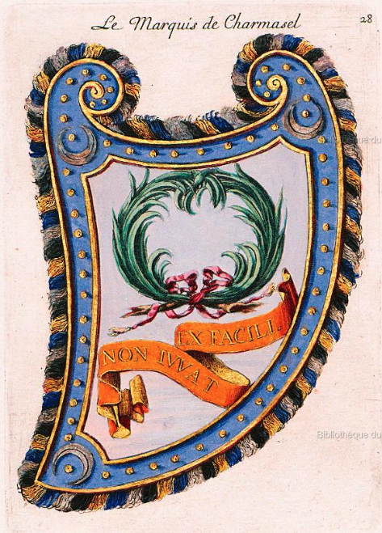 NON JUVAT EX FACILI MARQUIS DE CHARMASEL MARQUIS DE CHARMASEL Ce Chevalier déclare qu’il aime les Couronnes, non pas celles qui ne sont composées que de fleurs faciles à trouver: mais bien de celles qu’on ne sçauroit cueillir qu’avec difficulté et avec peril , comme la Palme et les Lauriers.
Turcs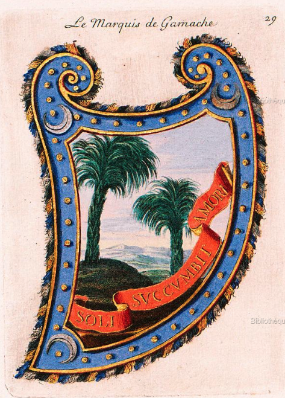 SOLI SUCCUMBIT AMORI MARQUIS DE GAMACHE MARQUIS DE GAMACHE Le Palmier n’est jamais accablé sous le poids d’aucun fardeau, il s’éleve plus on le charge; que si quelquefois il abbaisse sa cime et ses branches, ce n’est que pour s’approcher davantage de l’arbre, dont il est amoureux, enquoy il est vray symbole d’un grand courage, qui ne peut estre fléchy que par la douceur, et vaincu que par l’amour.
Turcs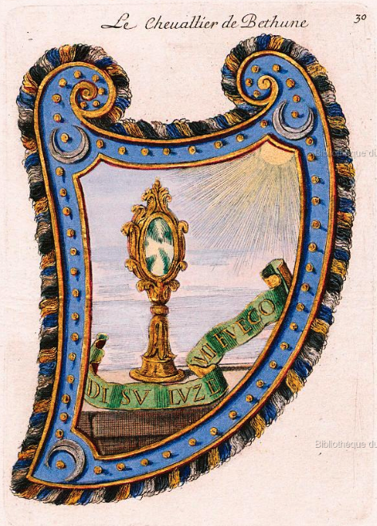 DE SU LUZ MI FUEGO CHEVALIER DE BETHUNES CHEVALIER DE BETHUNES La gloire du Roy est une lumiere éclatante, qui allume dans le cœur de ce Chevalier une ardeur incroyable pour son service, et qui ressemble en cela aux rayons du Soleil qui produisent du feu, étans receus et refléchis par le miroir ardent.
Turcs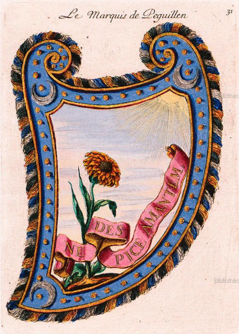 NE DESPICE AMANTEM MARQUIS DE PEGUILIN MARQUIS DE PEGUILIN Le Girasol par le soin qu’il a de suivre le Soleil, semble le conjurer sans cesse de ne point détourner ses regards de dessus luy; et en cela il est le symbole d’un Chevalier fidele à sa Maîtresse, dont il souhaite sur toute chose d’étre regardé sans cesse et favorablement.
Turcs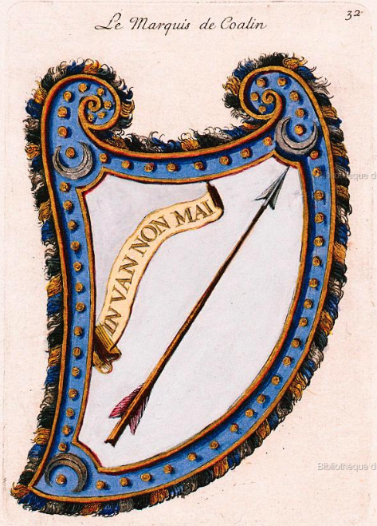 IN VAN NON MAI MARQUIS DE COASLIN MARQUIS DE COASLIN Le javelot que l’Aurore donna à Cephale ne manquoit jamais sa proye, et c’est sans doute à celuy-là que cette Devise fait allusion : en sorte que ce Chevalier prétend n’étre pas moins seur de son coup, que Cephale l’étoit autrefois.
Turcs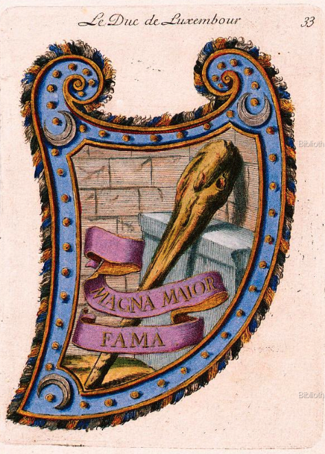 MAGNA MAJOR FAMA DUC DE LVXEMBOVRG DUC DE LVXEMBOVRG Ce Chevalier prétend que la renommée n’égalera jamais ses actions, de méme qu’elle n’a jamais égalé celles d’Hercule; Plusieurs desquelles sont demeurées ensevelies dans l’oubly.
Indiens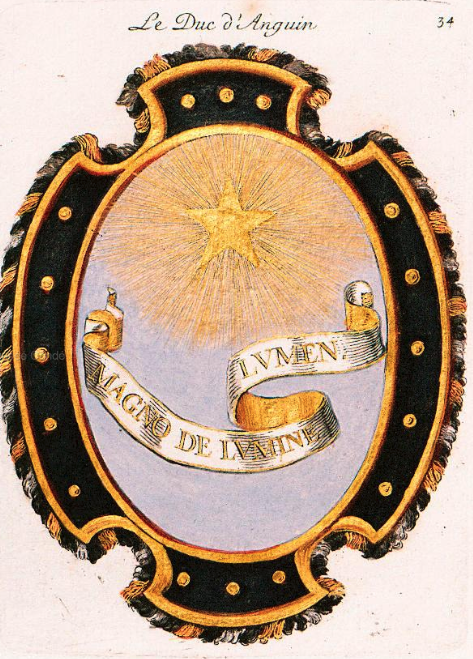 MAGNO DE LUMINE LUMEN DUC D’ANGUIEN DUC D’ANGUIEN Le Soleil étant l'unique source de toutes les Lumieres, les plus grandes Etoilles ont cét avantage d’en recevoir une plus abondante effusion que les autres, et c’est par cette comparaison que le Prince qui prend pour sa Devise l’Etoille du poinct du jour, la plus brillante de toutes, se glorifie de recevoir du Roy, plus de grace, et plus de faveur, que tous les autres Astres qui l’environnent.
Indiens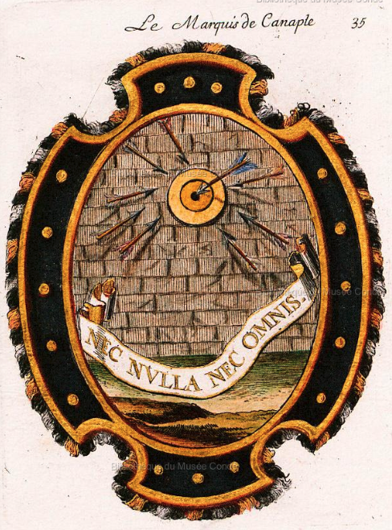 NECNULLA, NEC OMNIS MARQUIS DE CANAPLES MARQUIS DE CANAPLES Cette Devise peut signifier que comme toutes les beautez n’ont pas touché le cœur de ce Chevalier, il ne peut pas dire aussi qu’aucune ne l’ait frappé: Ou bien elle peut donner à entendre, que si toutes ses pretensions n’ont reüssi, au moins quelques-unes ont eû une issuë favorable.
Indiens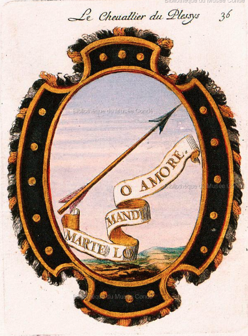 MARTE LO MANDI, O AMORE COMTE DU PLESSIS COMTE DU PLESSIS La Flêche étant une arme qui sert également à Mars ou à l’Amour, elle represente un Chevalier également Vaillant et Amoureux, et qui est prest d’affronter tous les hazards, où l’une et l’autre de ces Divinitez l’appelleront.
Indiens IUNCTA DECENT MARQUIS DE GENLIS MARQUIS DE GENLIS Comme le mélange de ces divers instrumens dont l'usage est si different, compose un trophée agreable à la veüe. Il en est de même d’un Chevalier, qui sçait joindre aux exercices penibles de la guerre, les jeux agreables de la Paix.
Indiens NOTA FIDES COMTE DE GUITAUT COMTE DE GUITAUT Soit que le Soleil represente la beauté dont ce Chevalier est Amoureux, soit qu’il signifie son Prince, il déclare par cette Devise, que sa fidelité pour son Maître ou pour sa Maîtresse, n’est pas moins constante, ny moins éprouvée que celle du Girasol, pour le bel Astre qu’il suit toûjours.
Indiens NON FICTI PRAEMINA MARTIS MARQUIS DE MONPESAT MARQUIS DE MONPESAT Le Chevalier qui porte cette Devise, veut donner à entendre que quelque glorieux qu’il soit, de remporter le prix dans des combats de Barriere, tels que ceux du Carrousel, son ame neantmoins ne peut étre pleinement satisfaite, qu’en remportant le prix d’un combat veritable.
Indiens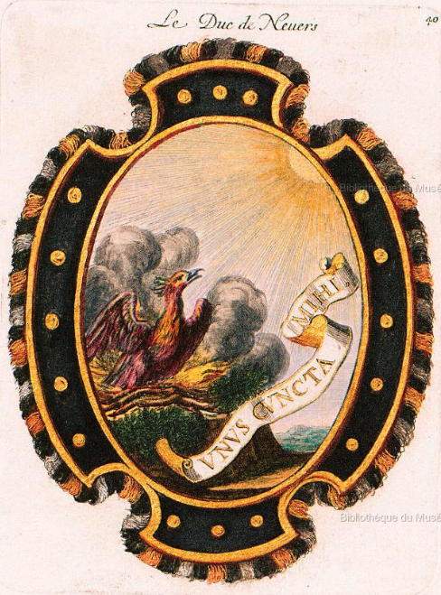 UNUS CUNCTA MIHI DUC DE NEVERS DUC DE NEVERS Le Soleil est le Pere, la nourriture et la joye du Phenix, et ce Chevalier qui le prend pour sa Devise, veut témoigner par ce symbole, non seulement qu’il tient tout de sa Majesté: mais aussi qu’elle luy tient lieu de toutes choses.
Indiens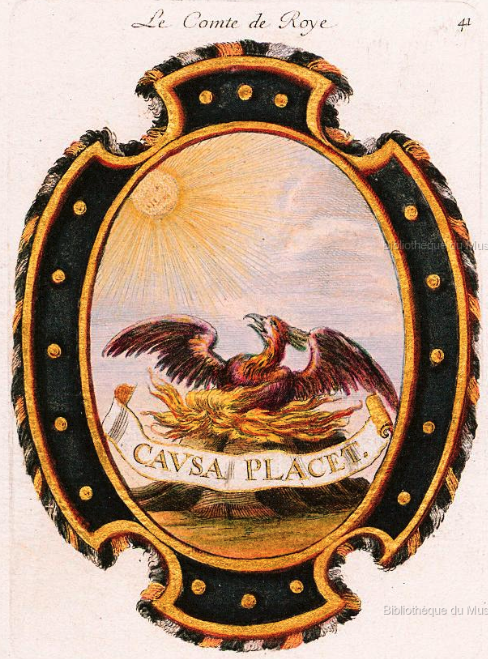 CAUSA BLACET COMTE DE ROYE COMTE DE ROYE Quelque affreuse que soit la mort, le sujet en est quelquefois si beau, qu’elle peut étre souhaitable: Et comme le Phenix s’y resout sans peine, parce que le Soleil en est la cause, ce Chevalier proteste qu’il la perdroit avec joye, si elle étoit employée pour le service de son Maître.
Indiens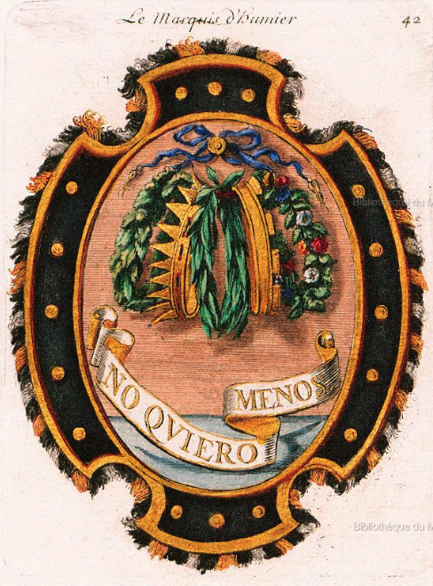 MON QUIERO MENOS MARQUIS D'HUMIERES MARQUIS D'HUMIERES Une seule de ces Couronnes pourroit satisfaire l’ambition d’un courage mediocre: mais une ame heroïque aspire à toutes, et ce Chavalier témoigne qu’il n’y en a pas une qu’il ne veüille obtenir.
Indiens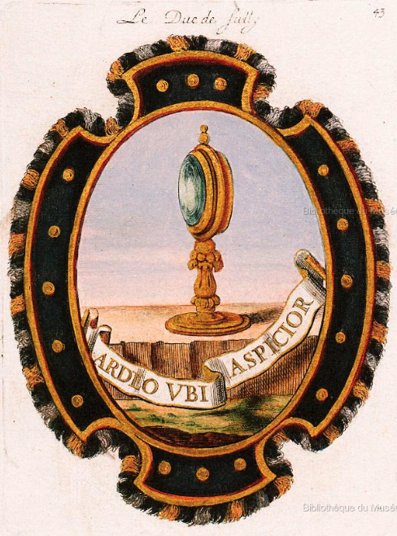 ARDEO UBT ASPICIOR DUC DE SULLY DUC DE SULLY Comme l’ardeur du miroir augmente à proportion de la lumiere qu’il reçoit du Soleil , ainsi ce Chevalier assure que son courage et son amour redoublent, selon qu’il est regardé de son Prince, ou de sa Maîtresse.
Indiens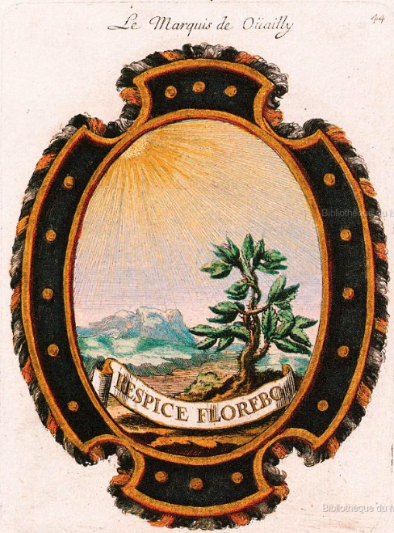 RESPICE, FLOREBO MARQUIS D'OVAILLY MARQUIS D'OVAILLY Comme le Rozier dont les boutons sont prests d’éclore, semble dire au Soleil qu’il le regarde, et qu’aussi tost il fleurira: ainsi ce Chevalier qui conçoit de grands desseins pour le service de son Prince, ne demande que d’en étre consideré, pour faire de grandes actions qui le couvriront de gloire.
Américains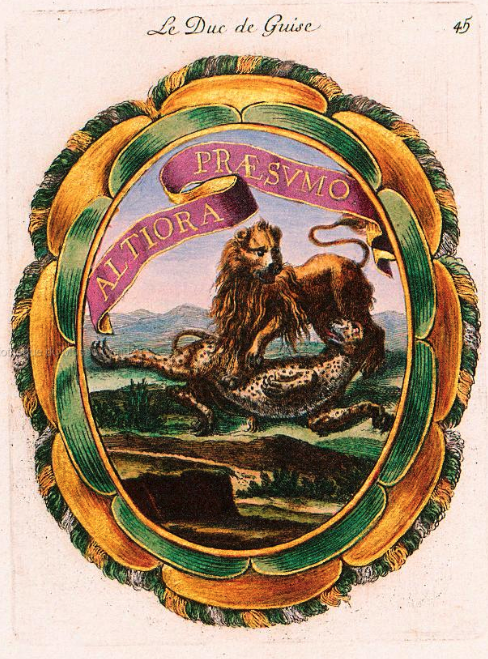 ALTIORA PRAESUMO DUC DE GUYSE DUC DE GUYSE Ce Prince a voulu témoigner par sa Devise, que les Courses de Bague, les Joustes, et les Carrousels, peuvent bien étre l’objet de ses divertissemens, mais non pas de ses occupations : et qu’il aspire à la gloire des plus hautes avantures, et des travaux les plus illustres representez par un Lyon courageux, qui abat et terrasse un ennemy digne de luy.
Américains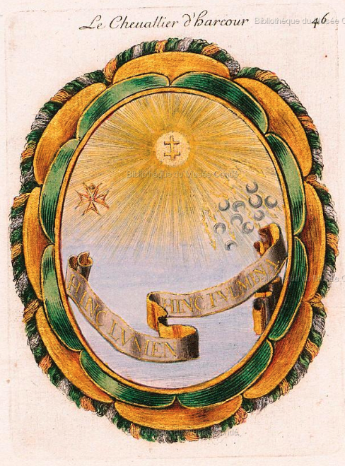 HINC LUMEN, HINC FULMINA CHEVALIER D’HARCOURT CHEVALIER D’HARCOURT Le Soleil étant la source de la Lumiere, et la cause principale des Foudres; ce Chevalier veut donner à entendre que le Roy representé par ce Soleil, est celuy de qui sa Maison et luy tirent toute leur gloire, et de qui partent les foudres qui doivent abatre l’orgueil des Ottomans.
Américains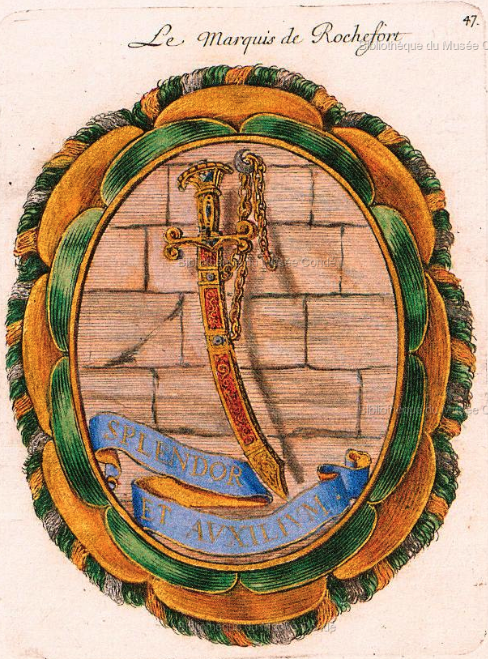 SPLENDOR, ET AUXILIUM MARQVIS DE ROCHEFORT MARQVIS DE ROCHEFORT Comme cette Epée est recommandable par l’éclat et le prix des pierreries qui l’embelissent, et au même temps par le secours que l’on en peut tirer; ce Chevalier prétend de même, que sa valeur doit tout ensemble luy acquerir la gloire, et servir à la défense de son Prince, et de son Païs.
Américains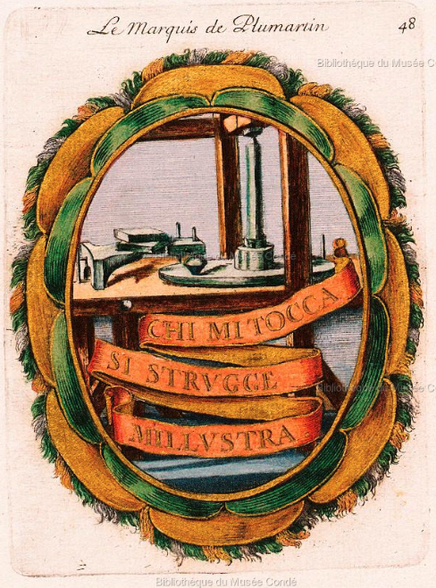 CHI MI TOCCA SI STRUGGE, E MILLUSTRA MARQUIS DE PLUMARTIN MARQUIS DE PLUMARTIN Il se fait un espece de combat entre le Diamant et l’Aimant qu’on employe pour le polir, où tout le dommage est du costé de l’Aimant qui se consume, et l’avantage du costé du Diamant, qui en reçoit un nouvel éclat; Ce Chevalier prétend qu’il en arrivera de même dans tous les combats qu’il entreprendra, où ses ennemis se trouveront toûjours mal de l’avoir attaqué, et luy au contraire, en sortira à son avantage, et plus brillant de gloire qu’auparavant.
Américains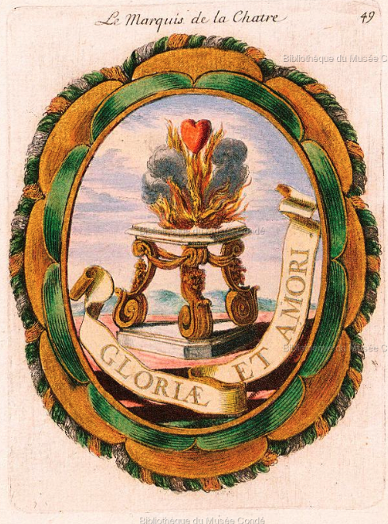 GLORIAE ET AMORI MARQUIS DE LA CHASTRE MARQUIS DE LA CHASTRE Ce Chevalier veut donner à entendre que son coeur est sensible à la gloire et à l’amour representez par l’Encens, et le Myrthe, qui en sont les symboles.
Américains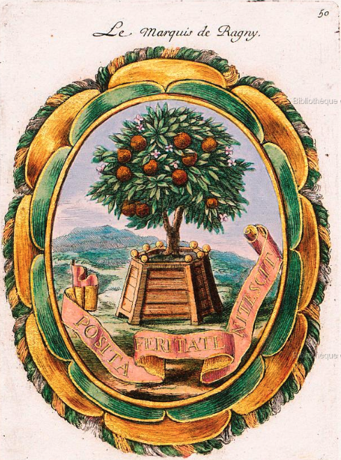 POSITA FERITATE NITESCIT MARQUIS DE RAGNY MARQUIS DE RAGNY Un Oranger que l’on a enté sur un Sauvageon non seulement apporte de plus beaux fruits, et de plus belles fleurs : mais pousse aussi de plus beaux feüillages qu’auparavant. Ce Chevalier assure qu’il en est de même, qu’il tempere les exercices farouches de la guerre, par les jeux et les divertissemens de la Paix.
Américains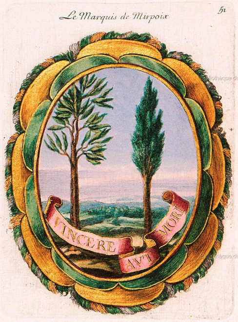 VINCERE AUT MORI MARQUIS DE MIREPOIX MARQUIS DE MIREPOIX Ces deux Arbres dont la signification est assez connüe, ont été choisis par ce Chevalier, pour faire entendre qu’il ne trouve point de party à prendre entre celuy de la Victoire, et celuy de la Mort.
Américains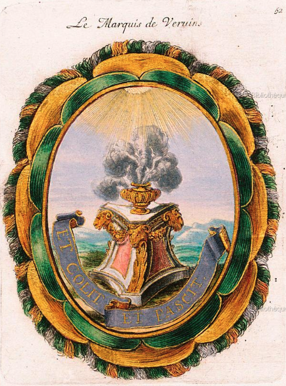 ET COLIT, ET PASCIT MARQUIS DE VERVINS MARQUIS DE VERVINS L'Encens étoit consideré non seulement comme une marque du culte que l’on rendoit aux Dieux, mais en quelque façon comme une nourriture dont ils se repaissoient, et c’est pour cette raison que ce Chevalier l’employe dans sa Devise, pour témoigner qu’il ne croit vivre que pour honorer son Prince, et qu’en qualité de premier Maître d’Hôtel du Roy, il se donne tout entier aux soins de la table de S. M.
Américains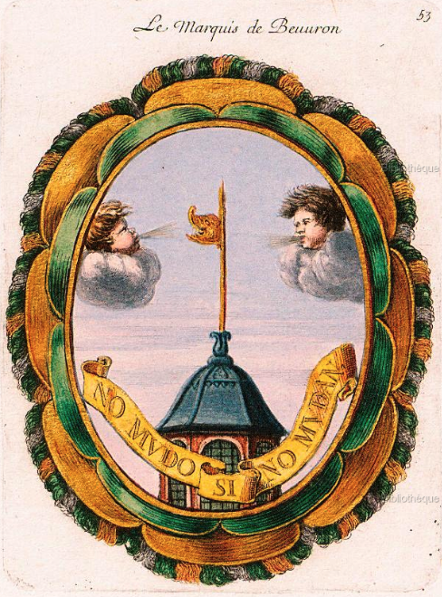 Une Giroüete agitée du vent MARQUIS DE BEUVRON MARQUIS DE BEUVRON Quelque soit l'inconstance de la giroüete, elle ne change point toutesfois de situation, à moins que le vent qu’elle est forcée d’imiter, n’en ait auparavant changé; Le Chevalier proteste qu’aussi ne changera-il jamais, à moins que sa Maîtresse ne change la premiere.
Américains GOZEN LA VISTA, QUEMEN LAS PLUMAS REMPLACER REMPLACER Le plaisir que l’Aigle trouve à regarder le Soleil, le charme tellement qu’il ne s’apperçoit pas que le feu se prend à ses plumes, ce qui represente bien l’ardeur d’un cœur passioné qui veut bien étre embrasé des beaux yeux qu’il aime, pourveu qu’il ait le plaifir de lesvor.
Américains AEQUABO SI FAVEAS DUC DE BRISSAC DUC DE BRISSAC Si les regards du Soleil font l’accroissement des Arbres, ceux du Prince ne contribüent pas moins à élever le courage et la fortune de ceux qui le servent, et c’est par cette consideration que ce Chevalier promet d’égaler dans peu les grandes actions de tous ces Ancestres, s’il est regardé favorablement de sa Majesté.